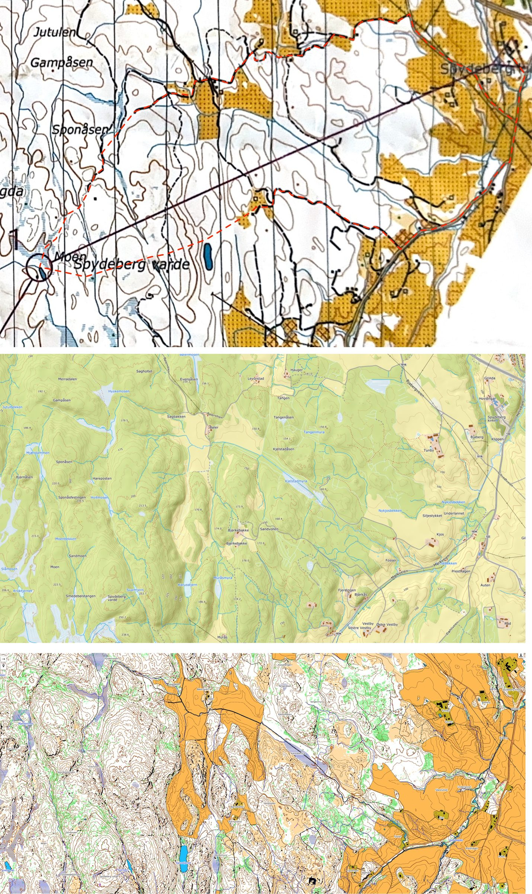
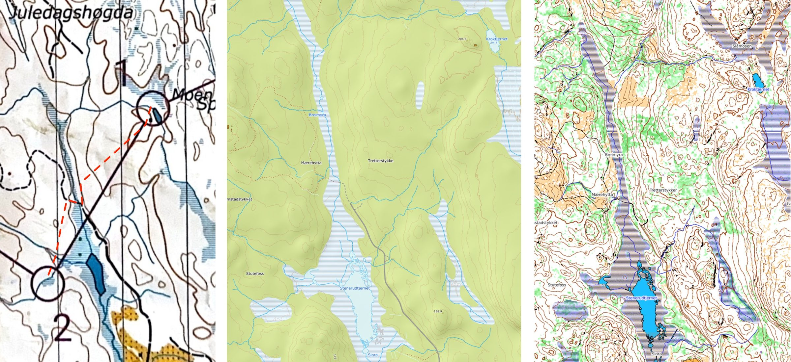
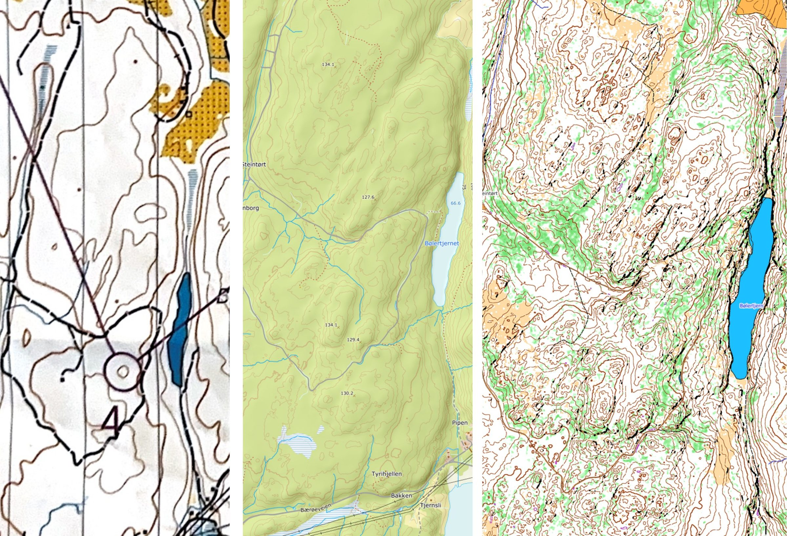
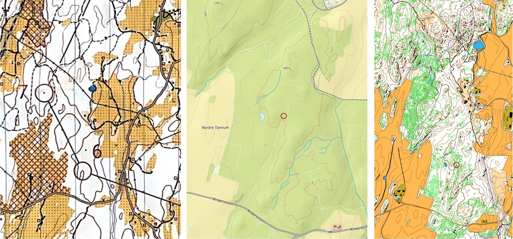

Hensikt
Dette er en kort oppsummering av erfaringene med Kadaverløpet 2026.
Været
Været var overskyet/grått med tendens til tåke enkelte steder, temperatur -1 til 1 grad.
Bekledning
- ulltruse
- litt tykke ullsokker
- litt tykk ulloverdel
- Swix-skibukse
- Stormberg treningsjakke
- buff i hals
- pannebånd
- tynne fleecehansker
- løpevest med
- lunken styrkedrikk
- lunkent vann
- 4 kvartinger med Nugatti
- hodelykt
- ekstra lue
- ekstra ullhansker
- ekstra buff
- vindduk
- reflekterende folie
- Hoka terrengsko
Målsetning
Ha en trivelig dagstur i skogen og god disponering av krefter i hyggelig selskap med Sabina.
Gjennomføring
Ulike kart
- Skannet kadaverkart
- Norsk standard kartserie (https://norgeskart.no)
- Norsk orienteringskart Norge (https://mapant.no)
Start var lagt til Spydeberg kirke og for oss med god tid gikk det stille og rolig for seg.
Start til post 1
Valget stod mellom nordre versus søndre rute (ref. røde stiplede linjer) uten noen «optimaliserende» tanker grunnet god tid.
Konklusjonen ble søndre rute i litt rask gange. Underveis var det introduksjon til kart, målestokk, ekvidistanse og kompass til Sabina.Målestokk 1:30 000 er ganske grovt (færre detaljer på kartet), som ble fort tydelig når vi begynte turen i terrenget ved Bjørkebakke gård.
Siden innstillingen var dagstur klatret vi opp og ned i terrenget uten bekymringer.Refleksjon 1
Ref. 3 forskjellige kartutsnitt med hver sin representasjon av terrenget (abstraksjon) fra start til post 1.
Jeg er bortskjemt med en abstraksjon som ligger mellom Norgeskart og Mapant og synes kadaverkartet ble for grovt med tilhørende utfordringer med kontakt mellom kart og terreng.
Det er ikke lett å føle seg trygg på rett kote (høydekurve).Vi hadde ganske god kontroll underveis og rutinert nok for kompasskurs og avstand fra «y» i «Spydeberg» til post 1.
Kurs og kontroll på avstand blir vanskeligere jo lenger avstand-til-post blir.Refleksjon 2
Uten unntak stoppet vi for tidlig før hver post, matstasjoner ekskludert. Det var ikke noe galt med kursen, men usikkerheten i avstanden «vokste» seg stor.
Det er fristende å stoppe for tidlig heller enn for sent hvis man kan passere posten uten å bli stoppet av noen detaljer. F.eks. nord for post 1.Refleksjon 3
Verifikasjon med digitalt kart gav jevn progresjon til post 1.
Start til post 1: kadaverkart, Norgeskart og Mapant, ovenfra og ned. Trykk for full størrelse. Post 1 til post 2
Veivalget til post 2 var å bli fanget av myrarmen og satset på «tørr nok» sti over. Deretter bare følge nedover og bli fanget av bekk til bekk og opp til myra.
Refleksjon 4
Tynne blå streker forbinder jeg med hyggelig bekk. Ok, erfaringsmessig er tynne blå streker på Dovre kartet ganske store elver, men ble ganske paff over hvor åpen myrarmen var.Vi ga opp den «tørr nok» stien og satte kursen nordover for smalere og hyggeligere myr. Heldigvis fant vi et tre som hadde falt over myra og fikk sin funksjon som bru.
Ref. refleksjon 1, 2 og 3 som fikk sin reprise mot post 2. Igjen, vi hadde god tid og stresset ikke, «fomlet» sakte, men sikkert mot post 2. Se tilhørende kartutsnitt.

Post 1 til post 2: kadaverkart, Norgeskart og Mapant, fra venstre. Trykk for full størrelse. Post 2 til post 3matstasjon
Det ble en enkel strekning med kurs og avstand til stien som ble fulgt hele veien til post 3.
Klokken viste 13 og vi lå ca 30 min etter nestsiste gruppe. Å være sist var forventet, men vi ble bekymret over fristen kl. 16 for 2. matstasjon (post 5).Post 3 til post 4
Veivalget var greit og rolig jogg førte oss nord for post 4.
Reprise av refleksjon 1, 2 og 3.Refleksjon 5
Se kartutsnitt for post 4 - hvilken kolle?
Post 4: kadaverkart, Norgeskart og Mapant, fra venstre. Trykk for full størrelse. Post 4 til post 5matstasjon
Veivalget var greit og rolig jogg førte oss til post 5, før kl. 15.
Med god margin til fristen tok vi oss god tid til kaker og toddy.Post 5 til post 6
Det ble et konservativt veivalg grunnet arbeidstiden var nå 6 timer+ og ønske om å spare på kreftene. Vi tok veien til Kroer-løypa og fulgte den et stykke.
Vi valgte å følge veien rett syd for post 6, der stien gikk syd for veien. Dette ble en oppgave i kompasskurs, avstand og nærkontakt med høydekurvene.Refleksjon 6
Jeg har aldri opplevd hogstfelt med ungskog kappet i tilfeldig mønster. Utrolig vanskelig å passere.Dessverre ble det reprise av refleksjon 1,2 og 5 (hvilket søkk). Se kartutsnitt for post 6. Underveis i prosessen falt mørket på og hodelykt ble tatt frem.
Vi gjorde et forsøk på markerte sirkler i Norgeskart og Mapant, men hogstfelt i kombinasjon med kratt gjorde det vanskelig.I dialog ble vi enige om å avslutte mens leken var god, fortsatt fin form, ikke kalde og nok batteri på hodelykt.
Det ble korteste vei til veien vest for post 6 og rolig jogg via Trampen, Eldor Nord, forbi grisene, gjennom Dyster gård, videregående og til Eika.
Post 6: kadaverkart, Norgeskart og Mapant, fra venstre. Trykk for full størrelse. Målgang Eika
Klokken viste mange arbeidstimer og 41+ km.


Konklusjon
- Utmerket turselskap med Sabina, som gjør sin første maraton fra Spydeberg kirke til Eika Ås. Upåklagelig humør og pågangsmot.
- Utmerket bekledning
- Jeg har ikke gode nok orienteringsevner (type gyroskop) når kartet har sparsomme detaljer
- Utmerket disponering av krefter og nok kondisjon
Og hva kan gjøres bedre?
Jeg er ikke motivert for å trene kompasskurs og avstand, eller å løpe i terreng.
Det er mulig å jogge litt mer til å begynne med, og dermed gi seg selv mer tid i dagslys.
Om man finner postene fort nok, blir på lykke og fromme.
Det er fullt mulig å stille 2027 med utgangspunkt i lang dagstur i skogen.